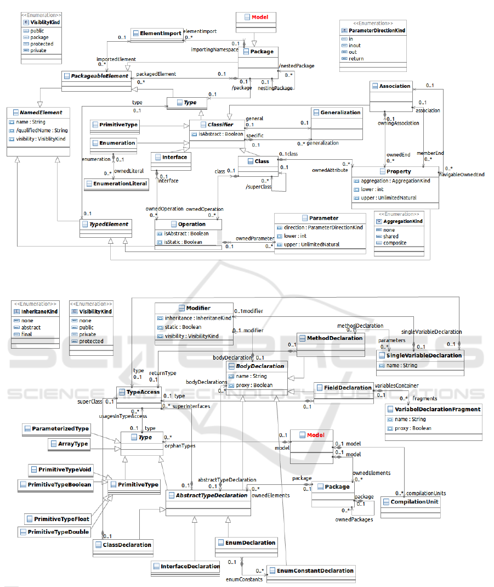
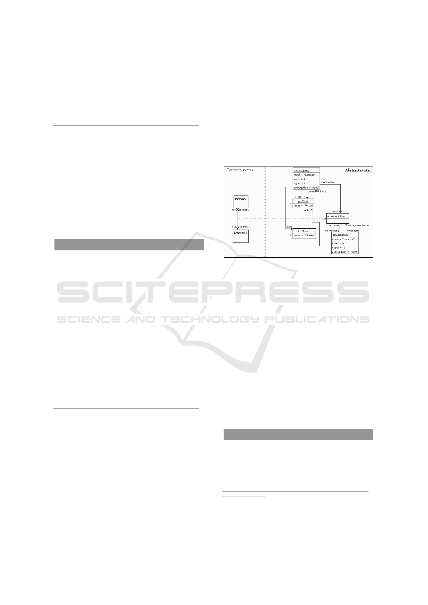
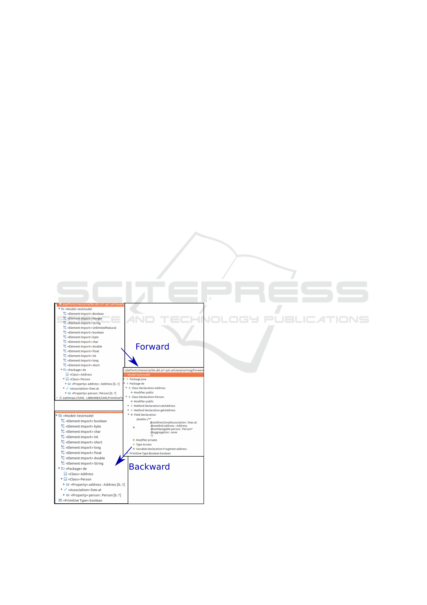
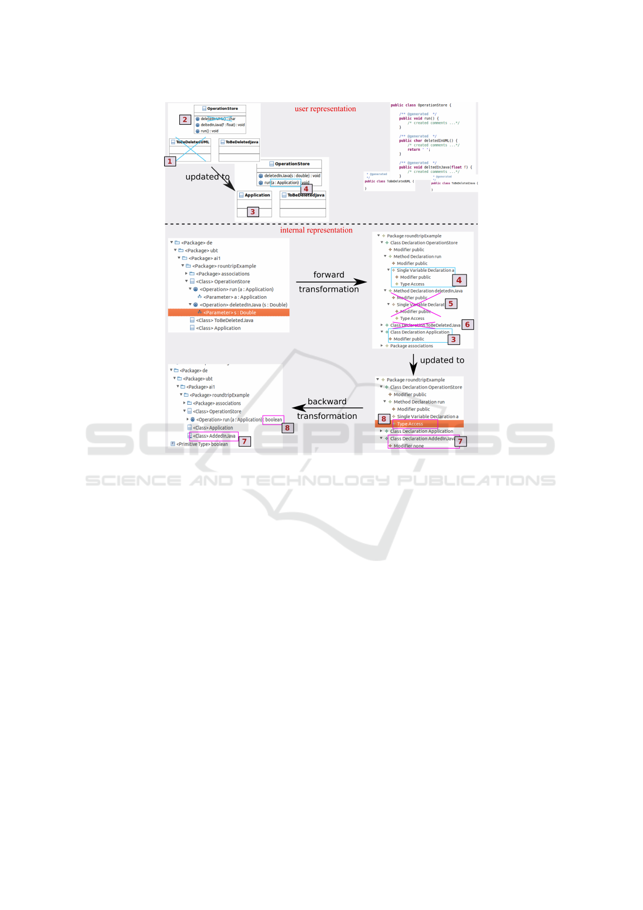

Bidirectional Transformations with QVT-R: A Case Study in Round-trip
Engineering UML Class Models and Java Source Code
Sandra Greiner, Thomas Buchmann and Bernhard Westfechtel
Chair of Applied Computer Science I, University of Bayreuth, Universit
¨
atsstrasse 30, 95440, Bayreuth, Germany
Keywords:
Bidirectional Transformations, UML, QVT, Java, Round-trip Engineering, Model Transformation.
Abstract:
Model-driven software engineering has become more and more important during the last few years. Model
transformations constitute the core essence of model-driven development. Throughout the years, the con-
cept of unidirectional model transformations and corresponding tool support has become mature and usable.
Transformations of this kind are widely used in model-driven development, for forward or reverse engineering
or mainly for code generation. Bidirectional transformations, on the other hand, aim to provide support for
(incrementally) transforming one or more source models to one or more target models and vice versa from
only one transformation description. However, they seem to be rarely used in model-driven software develop-
ment although modelers need round-trip support between the different stages of development models. In this
paper we present a QVT implementation of a bidirectional model transformation. Our case study keeps UML
class diagrams consistent with a Java model during round-trip engineering and thereby shows a real world
application. The results and experiences gained in this case study are discussed in detail.
1 INTRODUCTION
Model-driven software engineering is a discipline
which puts strong emphasis on the development of
higher-level models rather than on source code. Over
the years, UML (OMG, 2011c) has been established
as the standard modeling language for model-driven
development.
The basic idea behind UML is providing a stan-
dardized modeling language for the Model-Driven Ar-
chitecture (MDA) (Mellor et al., 2004) approach prop-
agated by the Object Management Group (OMG).
MDA is the result of a standardization process for
core concepts in model-driven software engineering
focusing on interoperability and portability. Thus,
the MDA approach uses both platform independent
(PIM) and platform specific (PSM) models and it uses
UML to describe both of them. UML itself con-
sists of several parts: (1) The Infrastructure (OMG,
2011b) defines the core of the meta language which
serves as the base for the architecture while the (2)
Meta Object Facility (MOF) (OMG, 2011a) defines
a meta-modeling language which uses and extends
the abstract syntax defined in the Infrastructure. (3)
The UML Superstructure (OMG, 2011c) defines all
kinds of UML diagrams and serves as the metamodel
specification for all UML modeling tools. (4) XMI
(XML Metadata Interchange) is intended to serve as
an interchange mechanism between UML tools and
as an input format for code generators or interpreters.
(5) Finally, the Object Constraint Language (OCL)
(OMG, 2012) provides a formal textual syntax based
on concepts of set theory and predicate logic to refine
models with queries and constraints.
Model-driven software engineering is supported
by model transformations. A wide range of lan-
guages and tools have been developed (Czarnecki and
Helsen, 2006), including e.g. QVT (QVT, 2015) and
ATL (Jouault et al., 2008). At present, the technology
for defining and executing unidirectional batch trans-
formations seems to be fairly well developed. How-
ever, in many scenarios transformations of this kind
do not suffice: After transforming a source model
into a target model, extensions and changes of the tar-
get model may still be required. As a consequence,
changes to the source model need to be propagated
such that manual modifications of the target model
are retained. Change propagations call for incremen-
tal rather than batch transformations. Furthermore,
changes to the target model may have to be reflected
in the source model; then, transformations need to be
bidirectional. Altogether, this results in a round-trip
engineering process in which source and target mod-
els may be edited independently and changes need
Greiner, S., Buchmann, T. and Westfechtel, B.
Bidirectional Transformations with QVT-R: A Case Study in Round-trip Engineering UML Class Models and Java Source Code.
In Proceedings of the 4th International Conference on Model-Driven Engineer ing and Software Development (MODELSWARD 2016), pages 15-27
ISBN: 978-989-758-168-7
Copyright
c
2016 by SCITEPRESS – Science and Technology Publications, Lda. All rights reserved
15
to be propagated in both directions. While several
languages and tools have been proposed for bidirec-
tional and incremental transformations, there are still
a number of unresolved issues concerning both the
languages for defining transformations and the re-
spective supporting tools (Stevens, 2007).
In this paper, we provide a case study dealing with
incremental round-trip engineering of UML class
models and Java source code. We use the MoDisco
(Bruneliere et al., 2010) framework to parse the Java
source code into a model representation. QVT-R
is used to formalize a bidirectional model-to-model
transformation between the UML model and the Java
model. This aspect is an interesting feature of QVT-
R, as a transformation developer may provide a sin-
gle relational specification which may be executed in
both directions, rather than writing two unidirectional
transformations separately. Moreover, QVT-R is cho-
sen because of its declarative nature where the devel-
oper is supposed to focus on relations and dependen-
cies between the metamodels rather than on single ex-
ecution steps. Triple graph grammars (Sch
¨
urr, 1994)
also provide powerful means to specify bidirectional
transformations. While there exist several tools sup-
porting TGGs (Leblebici et al., 2014), the TGG ap-
proach is not standardized and therefore we decided
to use QVT instead.
The usage scenario serves as a real-world case
study to evaluate the benefits and drawbacks of the
QVT-R standard in general and the provided tool sup-
port in particular.
The paper is structured as follows: In Section 2
we discuss related work. Section 3 presents the meta-
models used in our approach while excerpts of our
implementations and the results are shown in Section
4. The results are further discussed in Section 5 while
Section 6 draws a conclusion.
2 RELATED WORK
Common approaches that are used to transform text
(e.g. source code) to models are based on parsers for
the specific text languages. Usually, these approaches
work on the resulting parse trees and map the tree
items to corresponding model elements. Typical lim-
itations are maintenance problems when the underly-
ing M2T templates are changed.
In (Bork et al., 2008), Bork et al. describe an
approach towards model and source code round-trip
engineering, which is based on reverse engineering
of M2T transformation templates. The idea behind
this approach is to use (customizable) code genera-
tion templates as a grammar to parse the generated
(and later modified) code. The benefit of this ap-
proach compared to other approaches using plain Java
parsers and the resulting parse tree as a source for the
code to model transformation is that changes to the
templates are automatically taken into account during
reverse engineering. While the approach described in
(Bork et al., 2008) requires considerable implemen-
tation effort since a template parser, reasoner and to-
ken creator have to be implemented, our approach just
required the specification of QVT-R rules that relate
two elements of the respective meta-models. Since
MoDisco is able to parse source code which even
contains syntax or compile errors into a correspond-
ing Java model, our approach is also independent of
the style of the generated code and it also does not
depend on a (usually) fine grained parse tree. Fur-
thermore, Javadoc tags can be used to add additional
meta-information to the code. While the approach
presented in (Bork et al., 2008) is able to round-trip
engineer only code that has been generated with the
corresponding templates, our approach is able to han-
dle any code which complies to Java language speci-
fication version 3. In addition, the approach by Bork
et al. requires bijective reversible templates. E.g. the
approach will fail if an attribute name in a class con-
tains the class name.
Angyal et al. present in (Angyal et al., 2008) an
approach for model and code round-trip engineering
based on differencing and merging of abstract syntax
trees (AST). In this approach, the AST is regarded
to be the platform-specific model (PSM) according to
the taxonomy of models in MDA (Mellor et al., 2004).
Nevertheless, in this approach the AST model has a
very low level of abstraction because it exactly rep-
resents the code. Contrastingly, the discovered Java
model which is used in our approach is on a higher
level of abstraction. The round-trip engineering ap-
proach comprises two different round-trip tasks: one
between PIM and PSM, and one between PSM and
code. The approach tries to prevent information loss
during round-trip engineering by using a so called
trace model which is used to synchronize the PIM and
the PSM (the AST). Furthermore, the AST and the
source code are updated using a fine grained bidirec-
tional incremental merge based on three-way differ-
encing. In our approach, information loss is prevented
by using Javadoc tags as annotations. In case model
and code are changed simultaneously and the changes
are contradicting, one transformation direction has to
be chosen, which causes that some changes might get
lost.
There are also approaches that are dedicated
to model-to-model round-trip engineering. This
task involves synchronizing models and keeping
MODELSWARD 2016 - 4th International Conference on Model-Driven Engineering and Software Development
16
them consistent. Antkiewicz and Czarnecki pro-
pose an approach towards round-trip engineering
for framework-specific modeling languages (FSML)
(Antkiewicz and Czarnecki, 2006). FSMLs are a
special category of DSLs which are defined on top
of object-oriented application frameworks. In con-
trast to general round-trip engineering approaches,
the approach presented in (Antkiewicz and Czarnecki,
2006) does not have to deal with non-isomorphic
mappings between the artifacts, as the problem do-
main is much smaller and only code for a specific
framework is generated by the code generators of the
FSML. The synchronization of the involved imple-
mentation model is based on a comparison inspired
by CVS and reconciliation. In a last step, conflict res-
olution has to be carried out interactively by the user.
Hettel et al. (Hettel et al., 2009) propose an ap-
proach towards model round-trip engineering based
on abductive logic programming. In particular, this
approach does not place restrictions such as injective
behavior on the underlying transformations. A ref-
erence implementation is given which can be used
to reverse unidirectional transformations based on the
Tefkat language. It is a general approach, which could
also be applied to other model transformation lan-
guages, like QVT. However, since the source transfor-
mation does not necessarily need to be injective, am-
biguities have to be solved when reversing the trans-
formation. At the end, the “best” solution has to be
picked by the user or it has to be determined using
some kind of heuristics.
Recently, Macedo et al. proposed an idea on how
to circumvent some problems that are related with a
QVT-R script by using the language Alloy with their
tool Echo (Macedo and Cunha, 2014). In order to
find a proper model in the backward direction, they
apply the ”principle of least-change”. However, they
present an erroneous transformation that might not
work with an arbitrary tool, like medini QVT. This
leads to their decision to use Alloy instead, which
offers more structural aspects and neglects the basic
declarative idea of QVT-R.
3 OVERVIEW
In this section, we provide an overview on our ap-
proach and how it could be integrated into existing
UML CASE tools. Figure 1 depicts the different
building blocks. The user of the tool may work on
the UML model level or on the Java source code
level and perform changes. These changes are then
automatically propagated to the other direction with
the help of QVT-R. In the following we only focus
UML
Model
(EMF-
based)
Java
Source
Code
User Interaction
Round-trip Support
QVT-R rules
MoDisco Java
Model (EMF-
based)
update update
MoDisco
(T2M)
Acceleo
(M2T)
edit edit
Figure 1: Round-trip support for UML CASE Tools.
on the involved metamodels: The UML2 metamodel
and the MoDisco Java metamodel. Discovering the
Java model from Java source code and generating Java
source code from the Java model are out of scope of
this paper, since this is performed by the MoDisco
framework. Before we discuss the relevant parts of
the involved metamodels, we describe key concepts
of QVT-R and show which tools support its execu-
tion.
3.1 QVT-R
In order to keep this article self-contained, we shortly
mention important features of the QVT-R language.
For detailed information we refer to the official QVT-
R specification (QVT, 2015).
In a transformation elements of the corre-
sponding metamodels are regarded in a relation. A
relation declares at least two domains which can
be marked as checkonly, enforce or primitive
where the first keyword hints that a consistency check
must find corresponding elements otherwise it reports
an error. Contrastingly, if the domain is marked as
enforce, it will create the missing element and delete
inconsistent ones whereas primitive domains might
be used as variables. A relation can also be dec-
orated with the keyword top, i.e., it is executed au-
tomatically. Otherwise, it must be called explicitly.
With when and where clauses, further pre- and post-
conditions for a relation may be specified. A key
can indicate values that uniquely identify an element.
In general, every script is executable in many ways.
In both transformation directions the developer can
choose between checkonly and enforce mode and
thereby determine the respective semantics.
3.2 QVT-R Tools
Different tools implement (parts of) the QVT-R speci-
fication. Unfortunately, mostly they are not developed
any longer or do not implement the full standard.
Medini QVT
1
, that was chosen for the implemen-
1
http://projects.ikv.de/qvt
Bidirectional Transformations with QVT-R: A Case Study in Round-trip Engineering UML Class Models and Java Source Code
17
tation, is only available for slightly outdated Eclipse
versions
2
and is restricted to basic concepts of QVT-
R. For instance, the check-before-enforce semantics
of QVT-R is not realized. ModelMorf
3
seems to re-
alize most of the standard’s concepts but needs a li-
cense that is unavailable. It was used, e.g., in (Brad-
field and Stevens, 2013). The proposal of the Eclipse
Modeling Community, QVT-d
4
, is not yet able to ex-
ecute bidirectional relational transformations. A fur-
ther tool, QVT-XSLT (Li et al., 2011), allows to spec-
ify a transformation with the graphical notation of
QVT-R. Although this tool took part in a contest, it
is still prototypic and unavailable.
3.3 Used Metamodels
In the following subsection, we briefly discuss the
metamodels involved in our transformation. Both
metamodels are based on Ecore (Steinberg et al.,
2009), i.e. they share the same meta-metamodel.
Since most UML diagrams lack a precise and formal
semantics, we restrict the case study on the structural
features of both models. Behavioral aspects, like the
body of method declarations, are not regarded in the
implementation.
3.3.1 Eclipse UML2
Eclipse UML2 is part of the Eclipse Modeling
Project
5
. It provides an Ecore-based implementa-
tion of the OMG UML2 specification (OMG, 2011c).
Eclipse UML2 only constitutes the abstract syntax of
UML2. Tool integrators may contribute their own dia-
gram editors, code generators, and additional tooling,
as has been done, for example, in our Valkyrie (Buch-
mann, 2012) toolchain. Figure 2 depicts a simplified
overview of the most relevant metaclasses involved in
the transformation.
The root element, Model, which is a specializa-
tion of a Package, constitutes a hierarchy of pack-
ages. A Package may contain nestedPackages that
are derived from its packagedElements. The lat-
ter ones subsume – in our use case – classes, inter-
faces or enumerations besides the packages. Classes
and interfaces are container elements for Operations
that may have Parameters, where the direction at-
tribute specifies if a parameter is used as a return type
or as an input or output parameter. Attributes be-
longing to a Class are expressed by the metaclass
2
We tested it with Eclipse Indigo.
3
http://www.tcs-trddc.com/trddc website/ModelMorf/
ModelMorf.htm
4
https://wiki.eclipse.org/MMT/QVT Declarative (QVTd)
5
http://www.eclipse.org/modeling/
Property.
Properties and parameters have a multiplicity and
a type. Primitive types may be declared in the model
or they may be imported (importedElements).
Please note that in our case study we always im-
port the pre-defined primitive types supplied with the
Eclipse UML2 metamodel. An Association links
two classes and might be unidirectional or bidirec-
tional depending on whether both ends are naviga-
ble or only one end. A class may also extend an-
other class or implement an interface whereas inter-
faces can inherit other interfaces. The modeling de-
tails for the latter relationships are omitted in Figure
2 for simplification reasons.
3.3.2 Java (MoDisco)
MoDisco (Bruneliere et al., 2010) is an extensible
framework for developing model-driven tools to sup-
port use cases of software modernization. It provides
an Ecore-compliant metamodel for Java which resem-
bles the AST of the Java language. Furthermore, it
provides a discovery mechanism, that allows to parse
existing Java source code into instances of the Java
metamodel. The relevant cutouts of the MoDisco Java
metamodel are shown in Figure 3.
The Model contains a hierarchy of Packages but
is – in contrast to the UML metamodel – no spe-
cialization of a Package. It stores primitive types
as orphanTypes together with ParameterizedTypes
and ArrayTypes that represent multi-valued types.
Besides ownedPackages, a Package con-
tains further ownedElements that summa-
rize classes, interfaces and enumerations.
Attributes (FieldDeclaration) and oper-
ations (MethodDeclaration) are added as
bodyDeclarations. Both are typed elements
where the type of the operation represents the re-
turned type. Instead of accessing this type directly,
the metaclass TypeAccess provides access to the
respective type. This common pattern of the Java
metamodel records which two types are related
and provides indirect access to the actual type. For
example, the superClass and superInterfaces
are modeled in this way, too.
Input parameters for a method are modeled
differently as ownedParameters with the meta-
class SingleVariableDeclaration. More-
over, the name of an attribute is placed in the
VariableDeclarationFragment. To generate
source code, the Java model regards every classifier
as separate unit and records which elements belong
to it. CompilationUnits constitute the abstraction
of the Java files which contain type declarations
like classes, interfaces or enumerations. In order to
MODELSWARD 2016 - 4th International Conference on Model-Driven Engineering and Software Development
18

Figure 2: Some relevant parts of the Eclipse UML2 metamodel.
Figure 3: Some relevant aspects of the MoDisco Java metamodel.
generate Java source code from the Java model, it is
neccessary, that the Java model contains the appro-
priate compilations units, as the M2T transformation
supplied by the MoDisco framework needs these
elements as anchor points for the code generation
templates.
4 BIDIRECTIONAL
TRANSFORMATION WITH
QVT-R
This section introduces the implementation of the
transformation. Beforehand, we show conceptual ap-
Bidirectional Transformations with QVT-R: A Case Study in Round-trip Engineering UML Class Models and Java Source Code
19
proaches towards implementing QVT-R rules. At the
end of the section, we present the results that are ob-
tained from testing the transformation script.
4.1 Transformation Approach
In the following, we focus on different possibilities to
declare a transformation with their benefits and draw-
backs. A transformation may traverse the contain-
ment hierarchy top-down or bottom-up by strictly or-
dering the relation calls. Eventually, it turns out that a
hybrid approach is the most declarative form to spec-
ify the transformation.
4.1.1 Top-down
In a top-down approach we only need to specify one
top relation that transforms the root element, the
Model. Every other element will be considered in
called rules. They are included as postconditions in
the where clauses. This process traverses the span-
ning containment tree from its root element to the
leaves. Although it is a straightforward way to de-
clare the transformation, some drawbacks exist: The
treatment of cross-referencing elements is not obvi-
ous when they are declared in different rule patterns.
A mechanism must ensure that a single element is cre-
ated only once and otherwise only referenced. Ad-
ditionally, applying a step-wise transformation with
a given order contradicts the declarative nature, be-
cause the developer is more concerned about ordering
the calls instead of focusing on the relationships be-
tween the metamodel elements.
4.1.2 Bottom-up
The opposite conceptual approach inverts the idea of
the top-down process and starts at the bottom, the
leaves of the spanning-tree. Accordingly, this in-
cludes several different top relations. For example,
the creation of the parameters could initiate the trans-
formation of its containing operation and the latter, on
the other hand, the creation of the owning class. Ob-
viously, in this approach it is as well necessary to take
care that the same elements are only created once.
Another problem of this approach are circular depen-
dencies. For instance, a class might be the type of a
parameter. At the creation time of the parameter the
class might, however, not exist yet. Therefore, its cre-
ation must either be anticipated as precondition in the
when clause of the relation or a template for the class
must be used. Moreover, this approach relies heavily
on the fact that single elements are linked the right
way. Sometimes an element might not be located at
the lowest level and might not contain an element of
the lowest level. In this approach, it might not be
transformed at all as no element is there to commence
its creation. While the domain patterns might be writ-
ten more intuitively at first glance, we found these
drawbacks: Backward links must be modeled and
contain proper values. Secondly, there might be circu-
lar dependencies and unresolvable cross-referencing
elements.
4.1.3 Hybrid
As we have seen from the previous descriptions, the
strict ordering of relation calls in when and where
clauses contradicts the declarative nature of QVT-R
and is an unsatisfying solution. Consequently, we fo-
cus on a hybrid strategy: We try to declare as many
top relations as possible. Relations are only called in
where clauses when they are directly linked with the
calling concept, e.g. the addition of parameters to an
operation, or when they simplify the transformation
significantly. The latter reason holds, for instance,
when anticipating the creation of primitive types in
the Model, which is the first rule we present in the
next section. Other dependencies should be resolved
by the execution engine. Thereby, we may write rules
more intuitively but are dependent on the execution
engine to properly resolve dependencies.
4.2 Implementation
In this section, we present some example rules of our
implementation which demonstrate, on the one hand,
simple rules and, on the other hand, pitfalls that might
occur when declaring a QVT-R script.
We start with transforming the root element as a
fairly straightforward example for a relation. A rule
to transform the Model metaclass, as shown in Listing
1, can be designed fairly easy. Both metaclasses de-
fine a name attribute that must match.
Listing 1: Simplified transformation rule for the root, the Model.
1 top relation M ode l 2 M ode l {
2 nam e : Str ing ;
3 enforce domain uml uR oot : u ml :: Mod el {
4 na me = nam e
5 };
6 enforce domain j ava jR oot : j ava :: M o del {
7 na me = nam e
8 };
9 where {
10 E l ementI m p o r t 2Prim i t i v e T ( uRoot , j Roo t );
11 C reat e V o idTyp e ( u Ro ot , j R oot ) ;
12 C r eate S t r i ngCla s s ( u Root , j Roo t );
13 P a ckag e 2 P a ckage T o p ( uRoot , j Roo t );
14 }
15 }
MODELSWARD 2016 - 4th International Conference on Model-Driven Engineering and Software Development
20
However, every Model stores different kinds of types
and is composed of packages. Since primitive types
are needed in many relations, their creation is antic-
ipated in the where clause of the Model2Model rela-
tion (Listing 1, line 10). In the listing, we have sim-
plified this rule call due to space restrictions. In the
actual transformation, we have written eight differ-
ent rules where the letter T is replaced by one of the
actual primitive types that both metamodels share
6
.
The problem of this increasing amount of rules is dis-
cussed in the following paragraphs. As a consequence
of the rule calls, it can be assumed that primitive types
are created completely and accessible in other rela-
tions afterwards. Other types, like Strings, that are
treated differently in the metamodels need extra con-
sideration in the rule (Listing 1, lines 11-12). In a
last step, Listing 1 initiates the creation of packages
in line 13 as they are basic parts of the Model
7
.
Taking a closer look at the integration of primitive
types into Models (Listing 2), reveals one drawback
of QVT-R and the medini QVT implementation.
Listing 2: Simplified transformation rule for primitive types.
1 relation E l e m e n t Impor t 2 P r i mitive T {
2 t y peN a me : S t rin g ;
3 enforce domain uml uR oot : u ml :: Mo del {
4 e leme n t I mpor t = uI m port : u ml ::
Elem e n tImp o r t {
5 impo r t e dElem e n t = uI m port e d : u ml ::
Prim i t iveT y p e {
6 na me = t y peN a me
7 }
8 }
9 };
10 enforce domain j ava jR oot : j ava :: M o del {
11 o rpha n T ypes = jOr p han : j ava ::
Prim i t i veTy p e T {
12 n ame = ty p eNa m e
13 }
14 };
15 when { ty p eNam e = ’ T ’ ; }
16 }
Depending on the name of the primitive type, a differ-
ent metaclass must be picked in the Java domain (List-
ing 2, line 11). In total, this results in eight different
rules in our transformation that only differ in the name
of the type (Listing 2, line 15) and the corresponding
metaclass. As the parameter T hints, a template mech-
anism or rule inheritance would be beneficial. Thus,
one relation would suffice and simplify the transfor-
6
The shared primitive types are: Bool, Byte, Char, Dou-
ble, Float, Int, Long and Short.
7
Two different rules for packages are required because
they are added to the Model with a different reference than
to other packages in the Java metamodel.
mation significantly. Although the standard at least
defines rule inheritance in the QVT-R textual syntax
8
,
this functionality is missing in medini QVT. Accord-
ingly, we need to specify the same number of rules as
existing corresponding model elements when there is
a trivial difference in the metamodels.
The increase of rules becomes especially evident,
for instance, when treating parameters of an opera-
tion. The Java metamodel makes a difference be-
tween return and input parameters whereas the UML
metamodel only adapts the direction property of
the Parameter metaclass. In the Java model a re-
turned parameter is always present and might be – in
case it is empty – the type Void. It is modeled as
an instance of the metaclass TypeAccess. The list
of input parameters might really be empty. In con-
trast to the returned type, these elements are instances
of the SingleVariableDeclaration metaclass of
the Java metamodel. Additionally, there is a differ-
ence between single- and multi-valued types since in
the source code the multiplicity cannot be simply ex-
pressed by numbers, as is the case in the UML class
model. To this end, this results in separate rules for
single- and multi-valued, returned and input parame-
ters that must be further distinguished by their types.
Only when every possible combination is declared as
relation, the script is generally applicable.
Despite the combinatorial explosion of rules be-
cause of minor differences in the metamodels, in other
situations, we have found a way to circumvent the
missing capability of medini QVT to define relation
inheritance. For example, it is possible to define the
general components of a class in a ”super” relation, as
shown in Listing 3, and add specific details in ”sub”
relations, like the fact that the class inherits from an-
other class or realizes an interface.
Listing 3: Base transformation rule for classes.
1 top relation C las s 2 C las s {
2 /* v a riab l e dec l a rati o n s */
3 enforce domain uml uP ack : u ml :: Pa c kage {
4 p ackag e d E leme n t = u C las s : uml :: C las s {
5 /* set ba sic p rope r t ies :
6 name , v isi bil ity , ab str act , pa ckag e */
7 }
8 };
9 enforce domain j ava jP ack : j ava :: Pa c kag e {
10 o wned E l e ment s = jC l ass : ja va ::
Clas s D e c lara t i o n {
11 /* set ba sic p rope r t ies :
12 nam e , visi bil i ty , abs tract , pac k age
13 an d Co m p ilat i o n U nit */
14 }
15 };
8
There are no details given on the semantics of inheri-
tance.
Bidirectional Transformations with QVT-R: A Case Study in Round-trip Engineering UML Class Models and Java Source Code
21

16 when{
17 A uxPa c k 2Pac k ( u Pa ck , jPac k );
18 /* r etr i eve vi s ibil i t ies a nd a b str a ct
pro p erty */
19 }
20 where{ Au x C l ass2C l a ss ( uClass , jCla ss ) ; }
21 }
This is possible by employing an auxiliary relation
that links both instances in the where clause (Listing
3, line 20) after their basic properties have been trans-
formed. The auxiliary relation is kept quite simple
and solely defines two empty classes as domains. To
add special properties, this auxiliary relation is called
as precondition in the when clause of relations that
extend the basic values, like in Listing 4. This rule
adds an optional super class to the basic properties of
the class. The call in line 15 ensures that the super
classes (Listing 4, lines 5 and 11) are added to the
proper class instances.
Listing 4: Transformation rule to add a ’super’ class.
1 top relation C l ass2C l a s s _ gener a l i z e d {
2 enforce domain uml uP ack : u ml :: Pa c kage {
3 p ackag e d E leme n t = u C las s : uml :: C las s {
4 gene r a l izat i o n = uGen : uml ::
Gene r a l izat i o n {
5 gen e ral = u Sup er : uml :: C l ass {} }
6 }
7 };
8 enforce domain j ava jP ack : j ava :: Pa c kage {
9 o wned E l e ment s = jC l ass : ja va ::
Clas s D e c lara t i o n {
10 sup e r Clas s = j A cce s s : j ava ::
Typ e A cces s {
11 ty pe = j Sup e r : ja va : :
Clas s D e c lara t i o n {} }
12 }
13 };
14 when{ Au x P a ck2P a c k ( uPack , jPa c k ) ;
15 A uxCl a s s 2Clas s ( u Class , j C las s ) ;
16 A uxCl a s s 2Clas s ( u Super , j S upe r ) ; }
17 }
This pattern is applicable to all elements which
are referenced in different relations and should be
extended by additional properties. A similar result
might be achieved by using key declarations for the
component that should be extended. However, with
keys, their features must always be mentioned in ev-
ery domain pattern. Thus, it is necessary that all
unique properties are available in the respective re-
lation. In general, this is not always the case.
So far, we have only discussed situations in which
both metamodels possess matching elements, even so
they might not be 1:1 mappings. This is not the case
for UML associations. An Association is a concept
that is part of UML but unknown in Java. When gen-
erating Java source code, the ends of an association
are normally represented as attributes of the class of
the opposite end and receive corresponding accessor
methods. This, however, is only true when the asso-
ciation is bidirectional and the ends are owned by the
class
9
. Still, the non-navigable end of a unidirectional
association has to be stored in the Association. Fig-
ure 4 depicts the abstract syntax for a simple example
of a unidirectional association.
Figure 4: Representation of a unidirectional association in
abstract syntax.
As a comparable concept is missing in the Java
metamodel, the information about a non-navigable
end is a priori lost and not recoverable from source
code. Generally, the same is true for the name at-
tribute used for the Association. In order to de-
clare a proper bidirectional rule, we either have to use
special naming conventions or extract the information
from different sources. Since we do not want to re-
strict the user, we chose to attach Javadoc comments
to the source code. Accordingly, the user is free to
model and name the association ends as desired. The
comment style distinguishes between uni- and bidi-
rectional comments and regards the multiplicity of the
ends. A bidirectional comment, as shown in Listing
5, stores the name of the association in the first line
(Listing 5, line 2) and the name of the end and the
name of the end’s type in the following line.
Listing 5: Pattern for a bidirectional comment.
1 ’ /* *
2 @ b i d i recti o n a l A s socia t i o n : < a sso cNa me >
3 @ own E nd < mem berE ndNa me > : < m embe r End T y peN a m e
>
4 @ a ggre g a t ion : < a ggre g ati o nKin d >
5 */ ’
9
In our implementation we assume that navigable asso-
ciation ends always belong to classes and not to the associ-
ation itself.
MODELSWARD 2016 - 4th International Conference on Model-Driven Engineering and Software Development
22

Furthermore, it includes the information of the aggre-
gation kind (Listing 5, line 4), which would also be
lost in the source code in case no conventions are ap-
plied. For the unidirectional comment this style is ex-
tended by one line. After the second comment line
(Listing 5, line 3) with the ’@ownEnd’ tag, the non-
navigable end that is part of the Association itself,
is recorded in the same way as the ’ownEnd’.
Listing 6 shows a simplified version of how to re-
late a unidirectional association with the correspond-
ing FieldDeclaration. This rule reveals that as
soon as the mapping cannot be accomplished 1:1,
the rules might become really complicated. In the
UML domain, it declares the owned- (Listing 6,
lines 5-12) and the opposite memberEnd (Listing 6,
lines 13-22) of the Association, which should not
be the same (Listing 6, line 51). In the forward
direction, the Association is mapped to a single
FieldDeclaration of the non-navigable class and
receives, most importantly, a comment (Listing 6,
lines 42-45) that summarizes the necessary informa-
tion to build the Association in the backward di-
rection. Note that the types are not mandatory in the
comment because in the forward direction they are
known from the given types of the member ends (List-
ing 6, lines 9-11 and 17-19). In the backward direc-
tion, the types are accessible with the help of auxiliary
relations that link the class instances that are already
created and thus, retrieve the proper class types for
the navigable and non-navigable end. In this way, the
Association is built as well as the Property that is
added to the non-navigable class (uOwnedType). The
naming (Listing 6, lines 54-56) and the aggregation
kind (Listing 6, line 53) are extracted from the given
comment with queries.
Listing 6: Simplified transformation for unidirectional associa-
tions.
1 top relation U n iAsso c i a t i on2Pr o p e r t y {
2 /* va r i abl e decl a r a tion s . .. */
3 enforce domain uml u Pac k : u ml :: Pa c kag e {
4 p ackag e d E leme n t = u A sso c : uml ::
Ass o c i ati o n {
5 n ame = a Na me ,
6 o w n edE n d = uO w ned E n d : u ml :: Pr o pert y {
7 na me = n otN avN ame ,
8 low er = 0 , uppe r = 1 ,
9 ty pe = u O wned T y pe : uml :: C las s {
10 na me = n o tNav T y pe
11 },
12 a ssoc i a tion = uA s soc
13 }
14 mem b erEn d = u M emE n d : u ml :: Pr o pert y {
15 na me = sec Na me ,
16 low er = 0 , uppe r = 1 ,
17 ty pe = u M emT y pe : uml :: C las s {
18 na me = m e mTyp e N ame
19 },
20 a ssoc i a tion = u Assoc ,
21 cla ss = u Own edT ype ,
22 a ggre g a tion = uA ggr
23 },
24 _ p a cka g e = uPac k
25 }
26 };
27 enforce domain j ava jP ack : j ava :: Pa c kag e {
28 o wned E l e ment s = jC l ass : j ava ::
Clas s D e c lara t i o n {
29 body D e c l arat i o n s = jFi e ld : jav a ::
Fiel d D e c lara t i o n {
30 ty pe = j Acce ss : j ava :: T y p eAcc e s s {
31 ty pe = j Typ e : j ava ::
Clas s D e c lara t i o n {
32 na me = m e mTyp e N ame
33 }
34 },
35 /* fragm ent , modi fie r ,
comp i l a tionU n i t fea t ure s . .. */
36 comm e nts = jCo m ment : j ava :: Ja v adoc {
37 con t ent = ann ,
38 o r iginal C o m p i latio n U n i t = jC las s .
origi n a l C o mpila t i o n U nit
39 }
40 }
41 }
42 };
43 when{
44 not( uMe m Typ e = uO w n edTy p e );
45 not( a nn . in d exOf ( ’ @bid i r e ctio n a l ’ ) > 0) ;
46 -- b ind typ es :
47 A uxCl a s s 2Clas s ( uO w ned Typ e , jCla s s ) ;
48 A uxCl a s s 2Clas s ( uM emT ype , jTyp e );
49
50 an n = g e t U niDi r C o m ment ( aName , secNam e ,
mem Typ e Nam e , notN avN ame , not Nav Typ e
, agg r ) ;
51 ag gr = g e t S tring F r o mAggr ( uAg gr ) ; - - FW
52 ag gr = g e t A g grFro m C o m m entUn i ( ann ) ; - - BW
53 uAg gr = g e t A ggrF r o m S tring ( ag gr ) ;
54 n otN a v Name = getN o t N avNa m e ( a nn ) ;
55 n otN a v Type = getN o t N avTy p e ( a nn ) ;
56 aNa me = g e tAsso c N ame ( an n ) ;
57 }
58 }
The relation for bidirectional associations can be de-
clared with less effort and is only mentioned for com-
pleteness. It is sufficient to regard only one Property
as UML domain and to define the Association as
nested template with unique values. The Property
is related with a FieldDeclaration in the Java do-
main quite like it is declared for the memberEnd of a
unidirectional association. In contrast to the unidirec-
tional rule, these two instances suffice because pattern
matching will match both ends as a Property and the
Association is created only once because of a key
declaration.
Bidirectional Transformations with QVT-R: A Case Study in Round-trip Engineering UML Class Models and Java Source Code
23

The concept of keys embraces another problem.
Conceptually, a key should declare unique proper-
ties of an element, like a primary key in Relational
Databases. However, sometimes key properties are
mutually exclusive or not always available. For in-
stance, a Property may belong exclusively to a
class or to an association but sometimes may be
found in one of both. If we declare both references
as keys of the Property, the medini QVT engine will
search both values in every pattern of a Property. If
only one key attribute is set in the domain pattern, it
will lead to misbehavior, e.g. the Property is not
unique anymore when it only declares a class in its
pattern.
4.3 Results
The transformation described in the previous subsec-
tion was tested with a set of examples. The obtained
results show the expected behavior. The transforma-
tion may be executed without restrictions in both di-
rections. On the one hand, a forward transformation,
from UML to Java, followed by a backward trans-
formation preserves the original state of the source
model.
Figure 5 depicts one of the example scenarios.
The example contains a unidirectional association be-
Figure 5: Resulting models from transforming the given
UML classdiagram to Java source code and vice versa.
tween a class Person and a class Address where
many persons may live at one address. The
persons association end, however, is not navigable.
The figure presents cutouts of the UML abstract syn-
tax in the Ecore tree representation as well as the tree
representation of the MoDisco Java model which re-
sult from applying the transformation. As shown in
the figure, the non-navigable end persons and the
Association itself are not available in the Java rep-
resentation anymore except for the artificially added
comment of the navigable end address. Neverthe-
less, by using this comment and the auxiliary rela-
tions the association can be restored completely in
the backward transformation as the second arrow in-
dicates. Thus, a non-bijective element can be trans-
formed by exploiting additional information that is
stored in the models.
On the other hand, the result of the forward trans-
formation corresponds to the discovered Java source
code model except for the elements that are not con-
sidered by our transformation, e.g. the method bodies.
Moreover, we have examined the incremental be-
havior. A sample round-trip process is depicted in
Figure 6. We start with a UML model from which
we have already generated Java source code. In a first
step, we change the UML model (blue color) the fol-
lowing way: We delete a class (1) and a method (2)
and add a class (3) and an input parameter to a method
(4). Afterwards, we perform an incremental forward
transformation that integrates the changes in the Java
model in the expected way.
In a second step, we adapt the Java model with
the subsequent changes (red color) in the source code:
We delete a method (5) and a class (6) which are not
referenced from other elements. Additionally, we add
a new class (7) and further change the signature of the
method (8). After we execute our script incremen-
tally in the backward direction, these adaptations are
reflected in the UML model. Here we can observe
that, for example, the return type of the Operation
run() which was previously empty has changed to
type boolean and that this parameter was added to
the corresponding method in the UML model.
These modifications are picked as exemplary use
cases. Due to space restrictions, we cannot provide
the whole set of the tests which can be obtained from
the website provided in the Resources section. They
show that the same well-defined behavior can be ob-
served for the rest of the implemented features.
Yet, we have not examined simultaneous updates.
They might lead to lost updates or unwanted elements
that remain from unconsidered modifications of the
opposite model. For instance, if the user changes the
name of a class in both models in a different way, only
MODELSWARD 2016 - 4th International Conference on Model-Driven Engineering and Software Development
24

Figure 6: Sample round-trip process.
the name of the source model for the transformation
is kept. The other one cannot be regenerated. Still, in
general the round-trip process, is realizable with the
QVT-R script.
5 DISCUSSION
This section briefly describes the lessons learned from
implementing the use case.
First of all, 1:1 mappings do not pose many dif-
ficulties and can be implemented quite straightfor-
ward. Secondly, we additional elements may be
added without restrictions in the involved models: For
instance, a UML class needs a corresponding Java
ClassDeclaration and the ClassDeclaration al-
ways belongs to a CompilationUnit which must be
included additionally in the Java model. Since the
CompilationUnit can be extracted from the same
information as the ClassDeclaration, two bidirec-
tional rules match both Java elements to the same
UML Class as domain. This works well due to gen-
erating the Class first and referencing it later with
the auxiliary relation combined with the declaration
of key properties for the CompilationUnit.
Furthermore, we saw that due to the declarative
nature and limitations of medini QVT, minor differ-
ences in the metamodels may result in a large num-
ber of relations. Though the differences are minimal,
e.g. for the integration of primitive types, a differ-
ent rule to mention every metaclass separately is re-
quired. This is also true for packages, attributes of dif-
ferent types and becomes worse when regarding the
two kinds of parameters an operation might possess
where, moreover, the types can vary. A mechanism of
rule inheritance or the definition of template relations
would be a beneficial help. In this way the integration
of primitive types could be written as in Listing 2 and
T could be replaced automatically by the execution
engine.
To avoid copying and pasting a relation solely be-
cause of different type instances, it would be help-
ful to allow the declaration of abstract types as do-
mains or inside the domain patterns. The execution
engine could pick the respective instances. If spe-
cial behavior has to be implemented dependent on the
type, it could also be accomplished in the when or
where clauses. In these scenarios, queries with side-
Bidirectional Transformations with QVT-R: A Case Study in Round-trip Engineering UML Class Models and Java Source Code
25
effects, that are part of the operational QVT specifi-
cation (QVT-o) (QVT, 2015), might be an appropri-
ate construct to extract a proper type or to build up a
special part of the domain.
Moreover, there is a conceptual problem inherent
to key properties. They introduce unexpected behav-
ior when different, possibly mutually exclusive prop-
erties make up the key. If they cannot be declared in
every domain pattern, the regarded element might not
be built only once.
While sometimes the rules get really complicated,
we also found a workaround to simplify some rela-
tions without having the possibility to inherit from a
relation. By using auxiliary relations to keep track
of corresponding elements on both metamodels, it is
possible to add specific values to the general proper-
ties. This needs, however, the proper placement of the
calls of the auxiliary relation.
A further aspect includes the missing of seman-
tic rules. Generally, there is no possibility to ensure
that semantic constraints are fulfilled. For example,
it should not be possible that an association has two
aggregated ends or is composed of more than two
ends
10
. However, the only chance to exclude misbe-
havior is to define a domain pattern that restricts the
input elements in the desired way. The resulting pat-
tern might either be very complicated or not definable
at all. A solution to this problem might be to attach
an OCL script to the QVT transformation and to eval-
uate the resulting models according to the specified
constraints afterwards. However, this would need fur-
ther actions, like roll-backs or fixing rules, when the
result of the test is negative and hence is not easy re-
alizable.
Last but not least, the findings show that the pure
declarative semantics of QVT-R and missing medini
QVT support sometimes leads to a real overhead on
relations. Moreover, when implementing the relation,
the declarative nature is contradicted by considering
exactly where to put statements: in the when or in
the where clause. Because of the bidirectionality, the
developer must always consider the right ordering of
the statements and take care that they are executable
in both directions. This is, on the one hand, opposed
to the declarative idea of QVT-R. On the other hand,
a clearer execution order could rather facilitate the
QVT-R specification at many places and make the
script more expressive.
Finally, it must be mentioned that many problems
are specific to the capabilities of the medini QVT en-
gine. For instance, rule inheritance and extending
transformation scripts is conceptually foreseen in the
10
We only considered bidirectional associations in our
implementation.
standard but not semantically defined yet. However,
these concepts would be a valuable help to define
the transformation in a more declarative and compact
way. Hence, we have to claim the weak tool support
for complicating the specification of the transforma-
tion. Missing functionality and a faulty implementa-
tion of the check-before-semantics, syntax highlight-
ing, error checking and many other details might con-
fuse users of the tool and rather hinders learning and
defining QVT-R transformation.
6 CONCLUSION
In this paper we presented our bidirectional model
transformation between UML2 class models and a
Java model, which is obtained from Java source code.
The transformation serves as a case study and is in-
tended to be used in round-trip engineering scenarios
of our CASE tool Valkyrie (Buchmann, 2012).
It turned out that the transformation can be writ-
ten quite simple for matching elements but might be-
come very complex as soon as small differences exist
in the metamodels. Moreover, the weak tool support
hardens the process of specifying proper and simple
transformations. Nonetheless. it is possible to keep
two complex, non-injective models mutual consistent.
The transformation behaves well for batch transfor-
mations and determined incremental update opera-
tions.
To conclude, despite the fact that QVT-R offers a
high potential to declaratively keep two models (in-
crementally) in a synchronous state, weak tool sup-
port and ambiguities in the standard still hinder a
wide-spread usage of QVT-R in productive software
projects.
RESOURCES
The QVT-R script and the corresponding model in-
stances may be obtained via http://btn1x4.inf.uni-
bayreuth.de/umljava/UML-Java.zip. The specifica-
tion was tested with medini QVT, version 1.7.0 on
Eclipse Indigo.
REFERENCES
(2015). Meta Object Facility (MOF) 2.0 Query/View/Trans-
formation Specification. Needham, MA, formal/2015-
02-01 edition.
Angyal, L., Lengyel, L., and Charaf, H. (2008). A synchro-
nizing technique for syntactic model-code round-trip
MODELSWARD 2016 - 4th International Conference on Model-Driven Engineering and Software Development
26

engineering. In Proceedings of the 15th International
Conference on the Engineering of Computer Based
Systems (ECBS 2008), pages 463–472.
Antkiewicz, M. and Czarnecki, K. (2006). Framework-
specific modeling languages with round-trip engineer-
ing. In Proceedings of the 9th International Confer-
ence on Model Driven Engineering Languages and
Systems (MoDELS 2006), LNCS 4199, pages 692–
706, Genova, Italy.
Bork, M., Geiger, L., Schneider, C., and Z
¨
undorf, A. (2008).
Towards roundtrip engineering - a template-based re-
verse engineering approach. In Schieferdecker, I.
and Hartman, A., editors, ECMDA-FA, volume 5095
of Lecture Notes in Computer Science, pages 33–47.
Springer.
Bradfield, J. and Stevens, P. (2013). Enforcing QVT-R with
mu-Calculus and Games. In Cortellessa, Vittorio and
Varr, Dniel, editor, Fundamental Approaches to Soft-
ware Engineering, volume 7793 of Lecture Notes in
Computer Science, pages 282–296. Springer Berlin
Heidelberg.
Bruneliere, H., Cabot, J., Jouault, F., and Madiot, F. (2010).
MoDisco: a generic and extensible framework for
model driven reverse engineering. In Proceedings
of the IEEE/ACM international conference on Auto-
mated software engineering, ASE ’10, pages 173–
174, New York, NY, USA. ACM.
Buchmann, T. (2012). Valkyrie: A UML-Based Model-
Driven Environment for Model-Driven Software En-
gineering. In Proceedings of the 7th International
Conference on Software Paradigm Trends (ICSOFT
2012). INSTICC.
Czarnecki, K. and Helsen, S. (2006). Feature-based sur-
vey of model transformation approaches. IBM Sys-
tems Journal, 45(3):621–645.
Hettel, T., Lawley, M., and Raymond, K. (2009). To-
wards model round-trip engineering: An abductive
approach. In Proceedings of the 2nd International
Conference on Theory and Practice of Model Trans-
formations (ICMT 2009), LNCS 5563, pages 100–
115, Zurich, Switzerland.
Jouault, F., Allilaire, F., B
´
ezivin, J., and Kurtev, I. (2008).
Atl: A model transformation tool. Science of Com-
puter Programming, 72:31 – 39. Special Issue on Sec-
ond issue of experimental software and toolkits (EST).
Leblebici, E., Anjorin, A., Sch
¨
urr, A., Hildebrandt, S.,
Rieke, J., and Greenyer, J. (2014). A comparison of
incremental triple graph grammar tools. ECEASST,
67.
Li, D., Li, X., and Stolz, V. (2011). QVT-based Model
Transformation Using XSLT. SIGSOFT Softw. Eng.
Notes, 36(1):1–8.
Macedo, N. and Cunha, A. (2014). Least-change bidirec-
tional model transformation with QVT-R and ATL.
Software Systems Modeling, pages 1–28.
Mellor, S. J., Kendall, S., Uhl, A., and Weise, D. (2004).
MDA Distilled. Addison Wesley Longman Publishing
Co., Inc., Redwood City, CA, USA.
OMG (2011a). Meta Object Facility (MOF) Core. Object
Management Group, Needham, MA, formal/2011-08-
07 edition.
OMG (2011b). UML Infrastructure. Object Management
Group, Needham, MA, formal/2011-08-05 edition.
OMG (2011c). UML Superstructure. Object Management
Group, Needham, MA, formal/2011-08-06 edition.
OMG (2012). Object Constraint Language. Object Man-
agement Group, Needham, MA, formal/2012-01-01
edition.
Sch
¨
urr, A. (1994). Specification of Graph Translators with
Triple Graph Grammars. In Proceedings of the 20th
International Workshop on Graph-Theoretic Concepts
in Computer Science (WG 1994), volume 903 of
LNCS 903, pages 151–163, Herrsching, Germany.
Steinberg, D., Budinsky, F., Paternostro, M., and Merks,
E. (2009). EMF Eclipse Modeling Framework. The
Eclipse Series. Boston, MA, 2nd edition.
Stevens, P. (2007). Bidirectional Model Transformations
in QVT: Semantic Issues and Open Questions. In
Proceedings of the 10th International Conference on
Model Driven Engineering Languages and Systems
(MoDELS 2007), LNCS 4735, pages 1–15, Nashville,
USA.
Bidirectional Transformations with QVT-R: A Case Study in Round-trip Engineering UML Class Models and Java Source Code
27